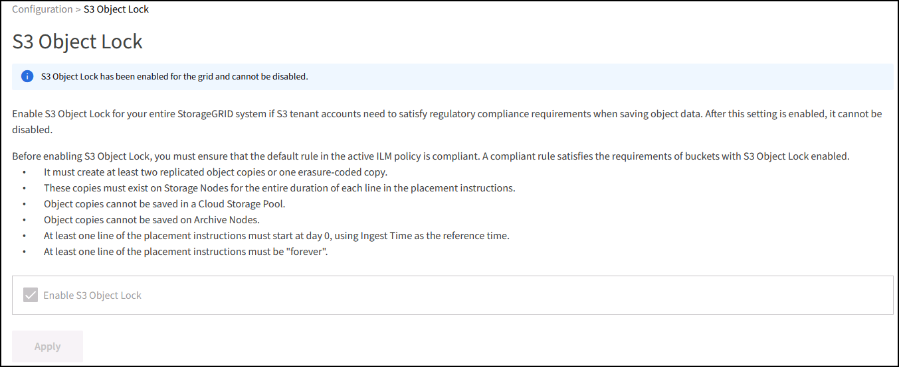
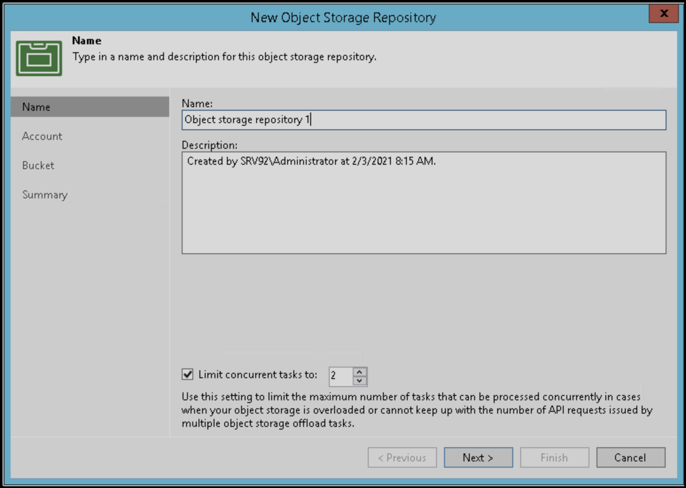

Validierte Lösungen von Drittanbietern
Validierte Lösungen von Drittanbietern
StorageGRID Best Practices für die Implementierung mit Veeam Backup and Replication
 Änderungen vorschlagen
Änderungen vorschlagen
Dieser Leitfaden konzentriert sich auf die Konfiguration von NetApp StorageGRID und teilweise Veeam Backup and Replication. Dieses Dokument richtet sich an Storage- und Netzwerkadministratoren, die mit Linux-Systemen vertraut sind und mit der Wartung oder Implementierung eines NetApp StorageGRID-Systems in Kombination mit Veeam Backup and Replication betraut sind.
Überblick
Speicheradministratoren möchten das Wachstum ihrer Daten mit Lösungen managen, die die Anforderungen an Verfügbarkeit, schnelle Wiederherstellung erfüllen, an ihre Bedürfnisse anpassen und ihre Richtlinien für die langfristige Aufbewahrung von Daten automatisieren. Diese Lösungen sollten auch Schutz vor Verlust oder böswilligen Angriffen bieten. Veeam und NetApp haben gemeinsam eine Datensicherungslösung entwickelt, die Veeam Backup & Recovery mit NetApp StorageGRID kombiniert und damit Objekt-Storage vor Ort ermöglicht.
Veeam und NetApp StorageGRID bieten eine benutzerfreundliche Lösung, die zusammen die Anforderungen eines schnellen Datenwachstums und die zunehmenden Vorschriften weltweit erfüllt. Cloud-basierter Objekt-Storage ist für seine Ausfallsicherheit, Skalierbarkeit, betriebliche Effizienz und Kosteneffizienz bekannt, die ihn zur ersten Wahl für Ihre Backups machen. Dieses Dokument enthält Anleitungen und Empfehlungen für die Konfiguration Ihrer Veeam Backup-Lösung und des StorageGRID Systems.
Der Objekt-Workload von Veeam erstellt eine große Anzahl von gleichzeitigen PUT-, DELETE- und LISTENVORGÄNGEN für kleine Objekte. Durch die Unveränderlichkeit wird die Anzahl der Anfragen an den Objektspeicher zur Festlegung von Aufbewahrungs- und Listenversionen weiter addiert. Der Prozess eines Backup-Jobs umfasst das Schreiben von Objekten für die tägliche Änderung. Nach Abschluss der neuen Schreibvorgänge löscht der Job alle Objekte, die auf der Aufbewahrungsrichtlinie des Backups basieren. Die Planung von Backup-Jobs wird sich fast immer überschneiden. Diese Überschneidung führt zu einem großen Teil des Backup-Fensters, das aus 50/50 PUT/DELETE Workloads auf dem Objektspeicher besteht. Anpassungen an die Anzahl gleichzeitiger Vorgänge mit der Einstellung für den Task-Slot vornehmen und die Objektgröße dadurch erhöhen, dass die Blockgröße für den Backup-Job erhöht wird, die Anzahl der Objekte in den Anforderungen zum Löschen mehrerer Objekte reduziert wird, und wenn Sie das maximale Zeitfenster für die Fertigstellung der Jobs auswählen, wird die Lösung hinsichtlich Performance und Kosten optimiert.
Lesen Sie unbedingt die Produktdokumentation für "Veeam Backup und Replication" Und "StorageGRID" Bevor Sie beginnen. Veeam bietet Rechner mit Informationen zur Dimensionierung der Veeam Infrastruktur und den Kapazitätsanforderungen, die vor der Dimensionierung Ihrer StorageGRID Lösung verwendet werden sollten. Informationen zu validierten Veeam-NetApp Konfigurationen finden Sie auf der Veeam Ready Program Website für "Veeam Ready Objekt, Unveränderlichkeit von Objekten und Repository".
Veeam Konfiguration
Empfohlene Version
Es wird empfohlen, immer auf dem neuesten Stand zu bleiben und die neuesten Hotfixes für Ihr Veeam Backup & Replication 12-System anzuwenden. Derzeit wird empfohlen, mindestens den Veeam Patch P20230718 zu installieren.
S3-Repository-Konfiguration
Ein Scale-out-Backup-Repository (SOBR) ist die Kapazitäts-Tier des S3-Objekt-Storage. Die Kapazitäts-Tier ist eine Erweiterung des primären Repositorys mit längeren Aufbewahrungszeiträumen und einer kostengünstigeren Storage-Lösung. Veeam ermöglicht Unveränderlichkeit über die S3 Object Lock API. Veeam 12 kann mehrere Buckets in einem Scale-out-Repository verwenden. StorageGRID hat keine Obergrenze für die Anzahl der Objekte oder Kapazität in einem einzelnen Bucket. Die Verwendung mehrerer Buckets verbessert möglicherweise die Performance beim Backup von sehr großen Datensätzen, bei denen die Backup-Daten in Objekten bis in den Petabyte-Bereich skaliert werden können.
Je nach Dimensionierung Ihrer spezifischen Lösung und den Anforderungen können Sie gleichzeitige Tasks beschränken. In den Standardeinstellungen wird für jeden CPU-Kern ein Repository-Tasksteckplatz und für jeden Task-Steckplatz ein Limit von 64 gleichzeitig ausgeführten Tasksteckplätzen festgelegt. Wenn Ihr Server beispielsweise 2 CPU-Kerne hat, werden insgesamt 128 gleichzeitige Threads für den Objektspeicher verwendet. Dies beinhaltet PUT, GET und Batch Delete. Es wird empfohlen, einen konservativen Grenzwert für die Taskslots auszuwählen, um mit zu beginnen und diesen Wert einzustellen, sobald Veeam-Backups einen stabilen Zustand von neuen Backups und auslaufenden Backupdaten erreicht haben. Arbeiten Sie mit Ihrem NetApp Account Team zusammen, um die Größe des StorageGRID Systems entsprechend anzupassen, damit die gewünschten Zeitfenster und Leistungen eingehalten werden. Um die optimale Lösung zu bieten, müssen Sie die Anzahl der Aufgabenplätze und die Anzahl der Aufgaben pro Steckplatz anpassen.
Konfiguration des Backupjobs
Veeam Backup-Jobs können mit anderen Blockgrößen konfiguriert werden, die besonders sorgfältig geprüft werden sollten. Die standardmäßige Blockgröße beträgt 1 MB und mit der Speichereffizienz, die Veeam mit Komprimierung und Deduplizierung bietet, erzeugt Objektgrößen von ca. 500 KB für das erste vollständige Backup und 100-200-KB-Objekte für die inkrementellen Jobs. Wir können die Performance des Objektspeichers deutlich steigern und die Anforderungen reduzieren, indem wir eine größere Blockgröße für Backups auswählen. Obwohl die größere Blockgröße zu großen Verbesserungen der Objektspeicher-Performance führt, geht dies zu Kosten, da potenziell höhere Anforderungen an die Kapazität des primären Storage aufgrund niedrigerer Storage-Effizienz-Performance entstehen. Es wird empfohlen, die Backup-Jobs mit einer Blockgröße von 4 MB zu konfigurieren, die ca. 2 MB Objekte für die vollständigen Backups und 700kB-1MB Objektgrößen für inkrementelle Backups erzeugt. Kunden ziehen möglicherweise sogar die Konfiguration von Backup-Jobs mit einer Blockgröße von 8 MB in Betracht, die mithilfe des Veeam Supports aktiviert werden kann.
Bei der Implementierung von unveränderlichen Backups wird auf S3 Object Lock im Objektspeicher gesetzt. Die Option „Unveränderlichkeit“ generiert eine größere Anzahl von Anfragen an den Objektspeicher zur Auflistung und Aktualisierung der Aufbewahrung der Objekte.
Wenn Backup-Retentions ablaufen, verarbeiten die Backup-Jobs das Löschen von Objekten. Veeam sendet die Löschanforderungen je Anforderung in 1000 Objekten an den Objektspeicher. Bei kleinen Lösungen muss diese ggf. angepasst werden, um die Anzahl der Objekte pro Anfrage zu verringern. Eine Senkung dieses Werts hat den zusätzlichen Vorteil, dass die Löschanforderungen gleichmäßig auf die Knoten im StorageGRID-System verteilt werden. Es wird empfohlen, die Werte in der folgenden Tabelle als Ausgangspunkt für die Konfiguration der Grenze für das Löschen mehrerer Objekte zu verwenden. Multiplizieren Sie den Wert in der Tabelle mit der Anzahl der Knoten für den ausgewählten Gerätetyp, um den Wert für die Einstellung in Veeam zu erhalten. Wenn dieser Wert gleich oder größer als 1000 ist, muss der Standardwert nicht angepasst werden. Wenn dieser Wert angepasst werden muss, wenden Sie sich an den Veeam-Support, um die Änderung vorzunehmen.
| Appliance-Modell | S3MultiObjectDeleteLimit pro Knoten |
|---|---|
SG5712 |
34 |
SG5760 |
75 |
SG6060 |
200 |

|
Wenden Sie sich an Ihr NetApp Account Team, um die empfohlene Konfiguration basierend auf Ihren spezifischen Anforderungen zu erhalten. Die Empfehlungen für die Veeam-Konfigurationseinstellungen umfassen:
|
StorageGRID-Konfiguration
Empfohlene Version
NetApp StorageGRID 11.6 oder 11.7 mit dem aktuellen Hotfix sind die empfohlenen Versionen für Veeam-Bereitstellungen. In StorageGRID 11.6.0.11 und 11.7.0.4 wurden zahlreiche Optimierungsfunktionen eingeführt, von denen Veeam-Workloads profitieren. Es wird empfohlen, immer auf dem neuesten Stand zu bleiben und die neuesten Hotfixes für Ihr StorageGRID-System anzuwenden.
Load Balancer und S3-Endpunktkonfiguration
Für Veeam muss der Endpunkt nur über HTTPS verbunden sein. Eine nicht verschlüsselte Verbindung wird von Veeam nicht unterstützt. Das SSL-Zertifikat kann ein selbstsigniertes Zertifikat, eine private vertrauenswürdige Zertifizierungsstelle oder eine öffentliche vertrauenswürdige Zertifizierungsstelle sein. Um den kontinuierlichen Zugriff auf das S3-Repository zu gewährleisten, wird die Verwendung von mindestens zwei Load Balancern in einer HA-Konfiguration empfohlen. Beim Lastausgleich kann es sich um einen von StorageGRID bereitgestellten integrierten Load Balancer handeln, der sich auf jedem Administrator-Node und Gateway-Node oder bei Lösungen von Drittanbietern wie F5, Kemp, HAProxy, Loadbalanacer.org usw. befindet Mithilfe eines StorageGRID Load Balancer kann man Traffic-Klassifikatoren (QoS-Regeln) festlegen, die den Veeam Workload priorisieren können oder Veeam auf Workloads mit höherer Priorität im StorageGRID System beschränken.
S3-Bucket
StorageGRID ist ein sicheres mandantenfähiges Storage-System. Es wird empfohlen, einen dedizierten Mandanten für den Veeam Workload zu erstellen. Optional kann ein Storage-Kontingent zugewiesen werden. Aktivieren Sie als Best Practice „eigene Identitätsquelle verwenden“. Sichern Sie den Mandanten-Root-Managementbenutzer mit einem geeigneten Passwort. Veeam Backup 12 erfordert eine hohe Konsistenz für S3 Buckets. StorageGRID bietet mehrere Konsistenzoptionen, die auf Bucket-Ebene konfiguriert sind. Implementierungen an mehreren Standorten, bei denen Veeam von diversen Standorten auf Daten zugreifen kann, wählen Sie „Strong Global“. Wenn Veeam-Backups und -Restores nur an einem einzigen Standort durchgeführt werden, sollte das Konsistenzniveau auf „Strong-Site“ gesetzt werden. Weitere Informationen zu Bucket-Konsistenzstufen finden Sie im "Dokumentation". Um StorageGRID Backups zur Unveränderlichkeit von Veeam zu nutzen, muss S3 Object Lock global aktiviert und während der Bucket-Erstellung auf dem Bucket konfiguriert werden.
Lifecycle Management
StorageGRID unterstützt Replizierung und Erasure Coding für eine Sicherung auf Objektebene über StorageGRID Nodes und Standorte hinweg. Erasure Coding erfordert mindestens eine Objektgröße von 200 kB. Die standardmäßige Blockgröße für Veeam von 1 MB erzeugt Objektgrößen, die oft unter dieser empfohlenen Mindestgröße von 200 KB liegen können, nachdem Veeam die Storage-Effizienz erreicht hat. Für die Performance der Lösung wird empfohlen, kein Erasure Coding-Profil für mehrere Standorte zu verwenden, es sei denn, die Verbindung zwischen den Standorten reicht aus, um keine Latenz hinzuzufügen oder die Bandbreite des StorageGRID-Systems zu beschränken. Bei einem StorageGRID System mit mehreren Standorten kann die ILM-Regel so konfiguriert werden, dass eine einzige Kopie an jedem Standort gespeichert wird. Um die ultimative Aufbewahrungszeit zu gewährleisten, kann eine Regel für die Speicherung einer Kopie, die nach dem Verfahren zur Fehlerkorrektur codiert wurde, an jedem Standort konfiguriert werden. Die am besten empfohlene Implementierung für diesen Workload ist der lokale Einsatz von zwei Kopien auf den Veeam Backup Servern.
Zentrale Punkte bei der Implementierung
StorageGRID
Stellen Sie sicher, dass die Objektsperre auf dem StorageGRID System aktiviert ist, falls eine Unveränderlichkeit erforderlich ist. Suchen Sie die Option in der Management-UI unter Configuration/S3 Object Lock.

Wählen Sie bei der Erstellung des Buckets die Option „S3 Object Lock aktivieren“ aus, wenn dieser Bucket zur Unveränderlichkeit von Backups verwendet werden soll. Dadurch wird die Bucket-Versionierung automatisch aktiviert. Die Standardaufbewahrung bleibt deaktiviert, da Veeam die Objektaufbewahrung explizit festlegt. Versionierung und S3 Object Lock sollten nicht ausgewählt werden, wenn Veeam keine unveränderlichen Backups erstellt.

Sobald der Bucket erstellt wurde, gehen Sie zur Detailseite des erstellten Buckets. Wählen Sie die Konsistenzstufe aus.

Veeam erfordert eine hohe Konsistenz für S3-Buckets. Wenn also Implementierungen an mehreren Standorten implementiert werden, bei denen Veeam von diversen Standorten auf die Daten zugreifen kann, wählen Sie „Strong Global“. Wenn Veeam-Backups und -Restores nur an einem einzigen Standort durchgeführt werden, sollte das Konsistenzniveau auf „Strong-Site“ gesetzt werden. Speichern Sie die Änderungen.

StorageGRID bietet einen integrierten Load Balancer auf jedem Admin-Node und dedizierten Gateway-Nodes. Einer der vielen Vorteile dieser Load Balancer ist die Möglichkeit zur Konfiguration von Richtlinien zur Traffic-Klassifizierung (QoS). Diese dienen hauptsächlich der Beschränkung der Auswirkungen von Applikationen auf andere Client-Workloads oder der Priorisierung von Workloads gegenüber anderen. Sie bieten jedoch auch einen Bonus bei der Erfassung zusätzlicher Metriken zur Unterstützung des Monitorings.
Wählen Sie auf der Registerkarte „Konfiguration“ die Option „Traffic Classification“ aus, und erstellen Sie eine neue Richtlinie. Benennen Sie die Regel, und wählen Sie entweder den/die Bucket(s) oder den Mandanten als Typ aus. Geben Sie die Namen der Bucket(s) oder Tenant ein. Falls QoS erforderlich ist, legen Sie eine Grenze fest. Bei den meisten Implementierungen jedoch möchten wir nur die Monitoring-Vorteile hinzufügen, damit Sie keine Obergrenze festlegen können.

Veeam
Je nach Modell und Anzahl der StorageGRID Appliances kann es erforderlich sein, eine Begrenzung der Anzahl gleichzeitiger Operationen auf dem Bucket auszuwählen und zu konfigurieren.

Folgen Sie der Veeam Dokumentation zur Konfiguration des Backup-Jobs in der Veeam Konsole, um den Assistenten zu starten. Wählen Sie nach dem Hinzufügen von VMs das SOBR-Repository aus.

Klicken Sie auf Erweiterte Einstellungen, und ändern Sie die Einstellungen für die Speicheroptimierung auf 4 MB oder mehr. Komprimierung und Deduplizierung sollen aktiviert werden. Ändern Sie die Gasteinstellungen entsprechend Ihren Anforderungen und konfigurieren Sie den Zeitplan für den Backupjob.

Monitoring von StorageGRID
Um sich ein vollständiges Bild davon zu machen, wie Veeam und StorageGRID zusammenarbeiten, müssen Sie warten, bis die Aufbewahrungszeit der ersten Backups abgelaufen ist. Bis zu diesem Zeitpunkt besteht der Veeam-Workload in erster Linie aus PUT-Vorgängen und es sind keine Löschungen aufgetreten. Sobald Sicherungsdaten ablaufen und Clean-ups durchgeführt werden, können Sie jetzt die vollständige konsistente Nutzung im Objektspeicher sehen und die Einstellungen in Veeam bei Bedarf anpassen.
StorageGRID bietet bequeme Diagramme zur Überwachung des Betriebs des Systems auf der Registerkarte „Support“ auf der Seite „Kennzahlen“. Sie sehen sich primär die S3 Übersicht, ILM und die Richtlinie zur Klassifizierung von Datenverkehr an, wenn eine Richtlinie erstellt wurde. Im S3-Übersichts-Dashboard erhalten Sie Informationen zu den S3-Betriebsraten, Latenzen und Anfragenreaktionen.
Bei Blick auf die S3-Raten und aktiven Anfragen sehen Sie, wie viel von der Last die einzelnen Nodes verarbeiten, und wie viele Anfragen insgesamt nach Typ verarbeitet werden.

Im Diagramm „Durchschnittliche Dauer“ wird die durchschnittliche Zeit angezeigt, die jeder Knoten für jeden Anforderungstyp einnimmt. Dies ist die durchschnittliche Latenz der Anfrage und kann ein guter Indikator dafür sein, dass möglicherweise zusätzliche Anpassungen erforderlich sind, oder dass das StorageGRID-System mehr Last aufnehmen kann.

Im Diagramm „abgeschlossene Anforderungen gesamt“ werden die Anforderungen nach Typ und Antwortcodes angezeigt. Wenn Sie andere Antworten als 200 (OK) für die Antworten sehen, kann dies auf ein Problem hinweisen, wie das StorageGRID-System wird stark geladen Senden 503 (Slow Down) Antworten und einige zusätzliche Tuning erforderlich sein, oder die Zeit ist gekommen, um das System für die erhöhte Last zu erweitern.

Im ILM Dashboard können Sie die Performance beim Löschen des StorageGRID Systems überwachen. StorageGRID verwendet eine Kombination aus synchronen und asynchronen Löschungen auf jedem Node, um die Gesamtleistung für alle Anforderungen zu optimieren.

Mithilfe einer Richtlinie zur Traffic-Klassifizierung können wir Kennzahlen zum Load Balancer Anforderungsdurchsatz, zu Raten, zur Dauer sowie zu den Objektgrößen anzeigen, die Veeam sendet und empfängt.


Wo Sie weitere Informationen finden
Sehen Sie sich die folgenden Dokumente und/oder Websites an, um mehr über die in diesem Dokument beschriebenen Informationen zu erfahren:
Von Oliver Haensel und Aron Klein